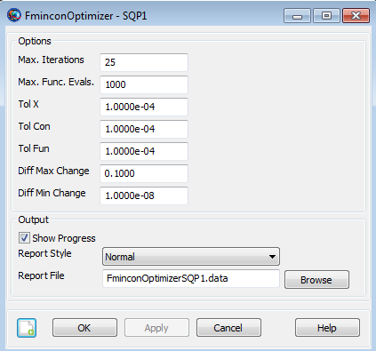

FminconOptimizer — The Sequential Quadratic Programming (SQP) optimizer, fmincon
fmincon is a Nonlinear Programming solver provided in MATLAB's Optimization Toolbox. fmincon performs nonlinear constrained optimization and supports linear and nonlinear constraints. To use this solver, you must configure the solver options including convergence criteria, maximum iterations, and how the gradients will be calculated. In the mission sequence, you implement an optimizer such as fmincon by using an Optimize/EndOptimize sequence. Within this sequence, you define optimization variables by using the Vary command, and define cost and constraints by using the Minimize and NonlinearConstraint commands respectively.
This resource cannot be modified in the Mission Sequence.
See Also: VF13ad,Optimize,Vary, NonlinearConstraint, Minimize
| Field | Description | ||||||||||||
|---|---|---|---|---|---|---|---|---|---|---|---|---|---|
| DiffMaxChange | Upper limit on the perturbation used in MATLAB's finite differencing algorithm. For fmincon, you don't specify a single perturbation value, but rather give MATLAB a range, and it uses an adaptive algorithm that attempts to find the optimal perturbation.
| ||||||||||||
| DiffMinChange | Lower limit on the perturbation used in MATLAB's finite differencing algorithm. For fmincon, you don't specify a single perturbation value, but rather give MATLAB a range, and it uses an adaptive algorithm that attempts to find the optimal perturbation.
| ||||||||||||
| MaxFunEvals | Specifies the maximum number of cost function evaluations used in an attempt to find an optimal solution. This is equivalent to setting the maximum number of passes through an optimization loop in a GMAT script. If a solution is not found before the maximum function evaluations, fmincon outputs an ExitFlag of zero, and GMAT continues.
| ||||||||||||
| MaximumIterations | Specifies the maximum allowable number of nominal passes through the optimizer. Note that this is not the same as the number of optimizer iterations that is shown for the VF13ad optimzer.
| ||||||||||||
| ReportFile | Contains the path and file name of the report file.
| ||||||||||||
| ReportStyle | Determines the amount and type of data written to the message window and to the report specified by field ReportFile for each iteration of the solver (when ShowProgress is true). Currently, the Normal, Debug, and Concise options contain the same information: the values for the control variables, the constraints, and the objective function. In addition to this information, the Verbose option also contains values of the optimizer-scaled control variables.
| ||||||||||||
| ShowProgress | Determines whether data pertaining to iterations of the solver is both displayed in the message window and written to the report specified by the ReportFile field. When ShowProgress is true, the amount of information contained in the message window and written in the report is controlled by the ReportStyle field.
| ||||||||||||
| TolCon | Specifies the convergence tolerance on the constraint functions.
| ||||||||||||
| TolFun | Specifies the convergence tolerance on the cost function value.
| ||||||||||||
| TolX | Specifies the termination tolerance on the vector of independent variables, and is used only if the user sets a value for this field.
|
The FminconOptimizer dialog box allows you to specify properties of a FminconOptimizer resource such as maximum iterations, maximum function evaluations, control variable termination tolerance, constraint tolerance, cost function tolerance, finite difference algorithm parameters, and choice of reporting options.
To create a FminconOptimizer resource, navigate to the Resources tree, expand the Solvers folder, highlight and then right-click on the Optimizers sub-folder, point to Add and then select SQP (fmincon). This will create a new FminconOptimizer resource, SQP1. Double-click on SQP1 to bring up the FminconOptimizer dialog box shown below.
|  |
This optimizer is only available if you have access to both MATLAB and MATLAB's Optimization toolbox. GMAT contains an interface to the fmincon optimizer and it will appear to you that fmincon is a built in optimizer in GMAT. Field names for this resource have been copied from those used in MATLAB’S optimset function for consistency with MATLAB in contrast with other solvers in GMAT.
Sometimes, when developing GMAT scripts, you may inadvertently create a situation where GMAT goes into an inifinite propagation loop. The usual remedy for this situation is to apply the GMAT Stop button. Currently, however, if the infinite loop occurs within an Optimize sequence using fmincon, there is no way to stop GMAT and you have to shut GMAT down. Fortunately, there are some procedures you can employ to avoid this situation. You should use multiple stopping conditions so that a long propagation cannot occur. For example, if fmincon controls variable, myVar, and we know myVar should never be more than 2, then do this.
Propagate myProp(mySat){mySat.ElapsedDays = myVar, mySat.ElapsedDays = 2} Create a FminconOptimizer resource named SQP1.
Create FminconOptimizer SQP1
SQP1.ShowProgress = true
SQP1.ReportStyle = Normal
SQP1.ReportFile = 'FminconOptimizerSQP1.data'
SQP1.MaximumIterations = 25
SQP1.DiffMaxChange = '0.1000'
SQP1.DiffMinChange = '1.0000e-08'
SQP1.MaxFunEvals = '1000'
SQP1.TolX = '1.0000e-04'
SQP1.TolFun = '1.0000e-04'
SQP1.TolCon = '1.0000e-04' For an example of how a FminconOptimizer resource can be used within an optimize sequence, see the Optimize command examples.